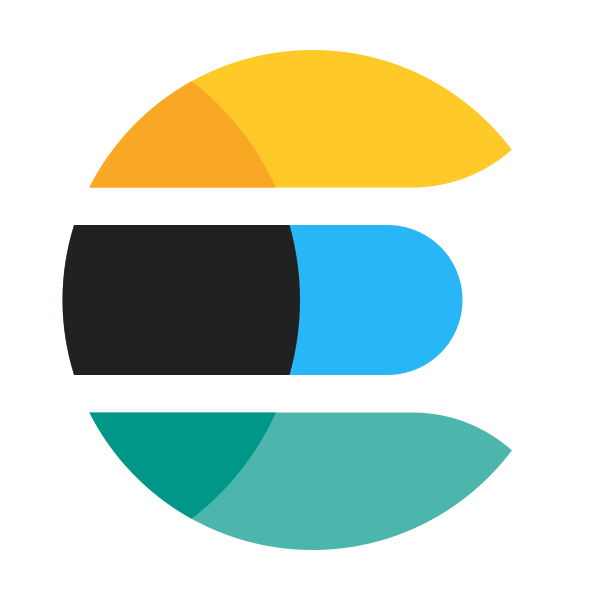
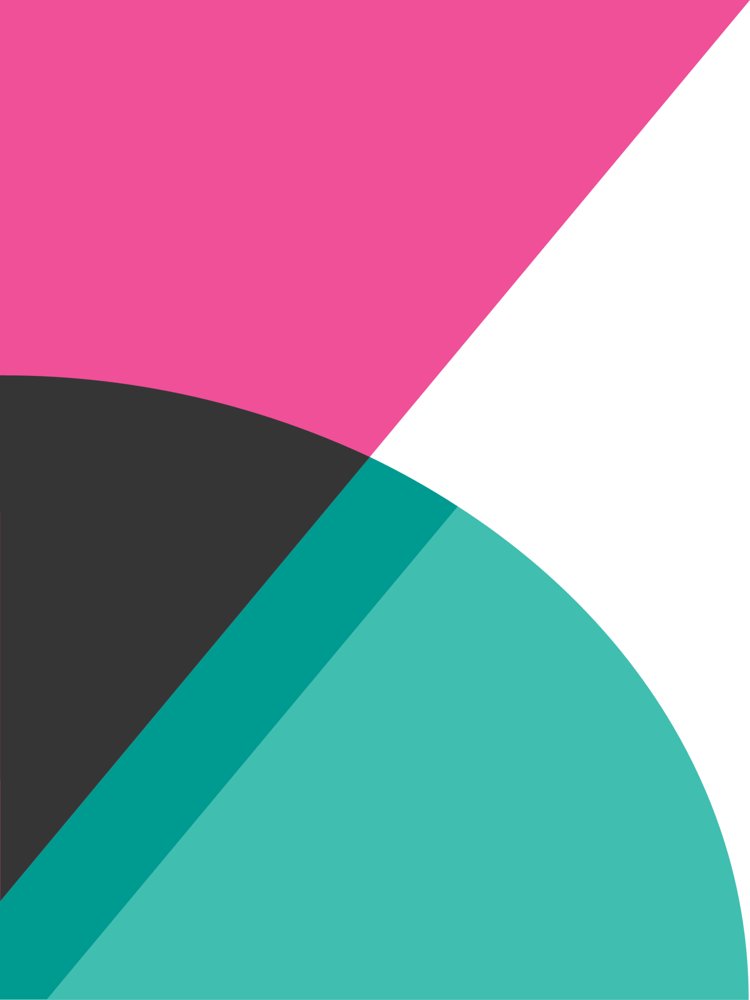

Özgeçmiş Veya daha fazlasını öğrenmek için aşağı kaydırın.
Eğitim
Adana Alparslan Türkeş Bilim ve Teknoloji Üniversitesi
Bilgisayar ve Bilişim FakültesiBilgisayar Mühendisliği
Adana - Türkiye
2021 - 2026Deneyim
Öğrenci Stajyer
Adana Alparslan Türkeş Bilim ve Teknoloji ÜniversitesiKasım 2025 - Şubat 2026
- Bölümün internet altyapısının yenilenmesine yardımcı oldum, ağ ekipmanlarının kurulumu ve yapılandırılması dahil.
- Ethernet Cat 5 kabloları oluşturma ve kablosuz kapsama alanını genişletmek için erişim noktaları dağıtma konusunda uygulamalı deneyim kazandım.
- Pratik bilgiyi teorik anlayışla desteklemek için bölüm derslerine aktif olarak katıldım.
Öğrenci Stajyer
Adana Alparslan Türkeş Bilim ve Teknoloji ÜniversitesiMart 2025 - Temmuz 2025
- Üniversite etkinlikleri ve konferansları için tanıtım materyalleri ve posterler tasarladım ve oluşturdum
- Kariyer planlama girişimleri için belge işleme ve idari görevleri yönettim
- Lojistik ve katılımcı yönetimi de dahil olmak üzere konferans hazırlığı ve koordinasyonuna yardımcı oldum
- Kariyer geliştirme programları için araştırma faaliyetlerine ve veri toplamaya katkıda bulundum
Yazılım Geliştirme Stajyeri
Teknology House Yazılım ve Bilişim, AdanaTemmuz 2024 - Ekim 2024
- Ürün arama sistemini SQL'den Elasticsearch'e taşıdım.
- Python ile prototip oluşturdum ve C# .NET ile entegre ettim.
- Kibana kullanarak dizinleri yönettim ve verileri görselleştirdim.
- Arama hızında önemli iyileştirmeler sağladım ve sunucu yükünü optimize ettim.
Ofis Çalışanı
Yılsan İnşaat2021 - 2024
Diller ve Araçlar
 Python
Python

Elasticsearch Git
Git

Kibana Go
Go
Projeler
01
02
03
04
05
06
07
08
09
Rottector
Meyveleri taze veya çürük olarak sınıflandırmak için iki modelin melezi olan yapay zeka destekli tespit sistemi. Python arka ucu ve web arayüzü ile uçtan uca proje.
PythonYOLOv8FastAPI
Lavida
Kaydedilen video bağlantılarını yönetmek için hafif, her zaman üstte kalan masaüstü widget'ı. Otomatik başlık çekme ve global klavye kısayolları.
PythonPyQt6SQLiteBeautifulSoup4
RAG Tutorial v2
Konuşma belleğine sahip gelişmiş RAG sistemi. PDF işleme, çok dilli destek ve etkileşimli geri bildirim özellikleri.
PythonLangChainChromaDBLlama 3.2
GOPAK E-commerce
Resmi Gopak Corporation için geliştirilen duyarlı e-ticaret uygulaması. 3D model görüntüleyici ve yönetici paneli içerir.
PHPMySQLHTML5JavaScript
Heart Attack Prediction & EDA
Kalp krizi tahmini için kapsamlı keşifsel veri analizi ve makine öğrenmesi modeli. Veri görselleştirme ve istatistiksel analiz.
PythonMachine LearningEDA
Modular Data Scraper
Modüler mimariye sahip, CLI tabanlı veri toplama aracı. Otomatik performans takibi, hata yönetimi ve yapılandırılmış CSV çıktısı.
PythonBeautifulSoup4Pandas
JustZipIt
Kullanıcı dostu arayüze sahip dosya sıkıştırma aracı. Verimli dosya arşivleme ve çıkarma yetenekleri.
PythonGUIDosya Sıkıştırma
Circling Loader
Web uygulamaları için hafif ve özelleştirilebilir dönen yükleyici animasyonu.
HTMLCSSJavaScript
Elasticsearch Arama Entegrasyonu
Cumba Kuruyemiş için SQL tabanlı aramayı yüksek performanslı Elasticsearch mimarisine taşıdım. C# .NET entegrasyonu ve Kibana ile dizin yönetimi.
ElasticsearchPythonC#Kibana